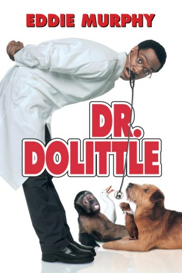

#2847 Dr. Dolittle
Alternativ: Doctor Dolittle
 
 IMDB-Wertung: 5.4 / 10
IMDB-Wertung: 5.4 / 10  Metascore: 46
Metascore: 46 
Es dürfte der Traum eines jeden Tierbesitzers sein, zu verstehen, was sein vierbeiniger Freund sagt, und ihm auch darauf antworten zu können. Eddie Murphy spielt in “Dr. Dolittle” einen Arzt, der diese einzigartige Gabe besitzt, und zum Tierarzt wird. Die Fähigkeit, mit Tieren sprechen zu können, bringt jedoch nicht nur Vorteile mit sich …
Jahr: 1998
Dauer: 85 Minuten
FSK: 0
Land: USA Studio: 20th Century FoxTonspuren: DD5.1 - ,
Untertitel:
Auflösung: 1080p (1920x1040) Größe: 6942 MB
Genre: Komödie, Fantasy, Familie
Regisseur:  Betty Thomas
Betty Thomas
Drehbuch: Hugh Lofting, Nat Mauldin, Larry Levin
Soundtrack: Richard Gibbs
Darsteller:
Datei: X:\1998\Dr. Dolittle (1998, FSK0, 1920x1040).mkv seit 25.12.2015
Festplatte: HD 1996-2002
 Es gibt insgesamt 86 Filme in der Gruppe '1998'
Es gibt insgesamt 86 Filme in der Gruppe '1998'